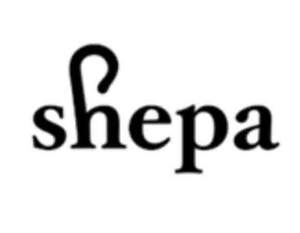

Trade Mark Journal No.2025/031 1 August 2025
UK00004239477 25 July 2025 (9,16,18,21,25,28,35,41)
Mark 1
SHEPA
Mark 2

- Class 9
- Computer software for education, training, coaching, teaching and mentoring; educational computer software; education software; computer software for use in education, training, coaching, teaching and mentoring for charities, social enterprises, funders of charities and social enterprises; computer software for use in education in relation to charitable affairs; computer software platform of charity and humanitarian projects; computer software for the transmission of information of charity and humanitarian projects; mobile applications in relation to education; mobile applications for use in education, training, coaching, teaching and mentoring in relation to charitable affairs; mobile applications for the transmission of information of charity and humanitarian projects; mobile apps in relation to education, training, coaching, teaching and mentoring; mobile apps for use in education, training, coaching, teaching and mentoring in relation to charitable affairs; mobile apps for use in education, training, coaching, teaching and mentoring for charities, social enterprises, funders of charities and social enterprises; mobile apps for facilitation of charity and humanitarian projects; communication, networking and social networking software; software for online social networking services for humanitarian projects; database management software in relation to charity and humanitarian projects; downloadable publications; downloadable publications relating to charitable affairs; downloadable publications relating to providing charity, education, entertainment, health care, social care and support services; downloadable publications relating to providing education and training to charities, social enterprises, funders of charities, social enterprises, businesses, entrepreneurs and non-profit organisations; downloadable recordings, media, videos, graphics, podcasts, videocasts, text and audio files; downloadable books, newspapers, brochures, newsletters, reports, leaflets, posters, pamphlets, flyers and magazines; downloadable promotional materials; e-books; audio books; downloadable e-books; podcasts; media content; media content in relation to charitable affairs; media content in relation to provision of education, training, coaching, teaching and mentoring for charities, businesses, entrepreneurs and non-profit organisations; media content relating to providing charity, education, entertainment, health care, social care and support services; downloadable audio, video and audiovisual multimedia content; downloadable audio, video and audiovisual multimedia content in relation to charitable affairs; downloadable audio, video and audiovisual multimedia content in relation to provision of training and education for charities, businesses, entrepreneurs and non-profit organisations; downloadable audio, video and audiovisual multimedia content relating to providing charity, education, entertainment, health care, social care and support services; mobile phone covers.
- Class 16
- Printed matter; printed publications; printed publications in relation to charitable affairs; printed publications relating to providing charity, education, entertainment, health care, social care and support services; printed books, newspapers, letterheads, brochures, newsletters, reports, leaflets, posters, pamphlets, flyers and magazines; printed instructional, educational and teaching materials; printed educational material; printed educational material in relation to charitable affairs; printed educational material for charities, social enterprises, funders of charities, social enterprises; printed educational material relating to providing charity, education, entertainment, health care, social care and support services; photographs; leaflets; posters; stationery; pens; pencils; office requisites; tickets; invitations; stickers; lapel stickers; programmes; envelopes; greeting cards; writing paper; notebooks; books; children’s books; magazines; notepads; calendars; banners; name badges; business cards; paper bags; plastic bags for wrapping and packaging; gift bags.
- Class 18
- Leather and imitations of leather; trunks and travelling bags; bags; tote bags; logo branded tote bags; shoulder bags; handbags; wallets; rucksacks; shopping bags; purses; key holders; coin holders; drawstring bags; canvas bags; makeup bags; sports bags; toiletry bags; umbrellas.
- Class 21
- Household or kitchen utensils and containers; water bottles; logo branded water bottles; aluminum water bottles; plastic water bottles; hot water bottles; reusable stainless steel water bottles; drinking bottles; mugs; logo branded mugs; coffee mugs; tea mugs; travel mugs; ceramic mugs; plastic mugs; glass mugs; cups; paper cups; cardboard cups; cups made of plastic; lunch boxes.
- Class 25
- Clothing, footwear, headgear; logo-branded clothing, footwear and headgear; t-shirts; logo-branded t-shirts; printed t-shirts; sweatshirts; logo-branded sweatshirts; hooded sweatshirts; hooded zip-ups; pullovers; half-zip pullovers; shirts; button-up shirts; long-sleeved shirts; polo shirts; long sleeved polo shirts; under shirts; tops; tank tops; crop tops; vest tops; jersey tops; camisoles; blouses; dress shirts; knitwear; jerseys; sleeveless jerseys; buttoned sweatshirts; crew-neck sweatshirts; sweaters; jumpers; cardigans; vests; gilets; tracksuits; tracksuit tops; jackets; coats; blazers; sports jackets; puffer jackets; varsity jackets; bomber jackets; golf and ski jackets; trench coats; raincoats; denim jackets; leather jackets; jackets made of artificial leather; quilted jackets; hunting jackets; waistcoats; rainproof clothing; sportswear; loungewear; dresses; trousers; tracksuit bottoms; suit pants; jeans; sweatpants; joggers; chino trousers; shorts; denim shorts; sweat shorts; skirts; leggings; swimwear; beachwear; sportswear; sleepwear; underwear; lingerie; night gowns; pyjamas; bathrobes; shoes; boots; trainers; sneakers; slides; slippers; sandals; socks; sport socks; crew socks; ribbed socks; logo-branded socks; stockings; tights; hoods; caps; baseball caps; flat caps; hats; trucker hats; camper hats; beanies; bandanas; neckerchiefs; berets; cloche hats; bucket hats; neckwear; neckties; headbands; visors; ear warmers; ear bands; earmuffs; scarves; shawls; gloves; mittens; belts.
- Class 28
- Toys, games and playthings; stuffed toys; plush toys; fabric toys; plastic toys; mascot stuffed toys; toy figurines; dolls; soft dolls; stuffed toy animals; educational games; educational games in relation to charitable affairs; board games; educational board games; card games; playing cards and card games.
- Class 35
- Advertising, marketing and promotional services; business consultancy services; business consultancy in relation to charity and humanitarian projects; business consultancy and advice for charities, social enterprises, funders of charities and social enterprises; business consultancy and advisory services for the operation of charities and social enterprises and to funders of charities and social enterprises; information and consultancy services in relation to charity governance, strategy and fundraising; advice on the administration, organisation and operation of charities; business administration; business advice; business information; business management; business consultancy; business management relating to charities; business consultancy relating to charities; management administration; management advice; management advice relating to charities; management consultancy; management consultancy relating to charities; business data analysis; conducting surveys and providing data on surveys in relation to charitable affairs, charity and humanitarian projects; retail services, online retail services and wholesale retail services in relation to printed matter, printed publications, printed publications in relation to charitable affairs, printed publications relating to providing charity, education, entertainment, health care, social care and support services, printed books, newspapers, letterheads, brochures, newsletters, reports, leaflets, posters, pamphlets, flyers and magazines, printed instructional, educational and teaching materials, printed educational material, printed educational material in relation to charitable affairs, printed educational material for charities, social enterprises, funders of charities, social enterprises, printed educational material relating to providing charity, education, entertainment, health care, social care and support services, photographs, leaflets, posters, stationery, pens, pencils, office requisites, tickets, invitations, stickers, lapel stickers, programmes, envelopes, greeting cards, writing paper, notebooks, books, children’s books, magazines, notepads, calendars, banners, name badges, business cards, paper bags, plastic bags for wrapping and packaging, gift bags, leather and imitations of leather, trunks and travelling bags, bags, tote bags, logo branded tote bags, shoulder bags, handbags, wallets, rucksacks, shopping bags, purses, key holders, coin holders, drawstring bags, canvas bags, makeup bags, sports bags, toiletry bags, umbrellas, household or kitchen utensils and containers, water bottles, logo branded water bottles, aluminum water bottles, plastic water bottles, hot water bottles, reusable stainless steel water bottles, drinking bottles, mugs, logo branded mugs, coffee mugs, tea mugs, travel mugs, ceramic mugs, plastic mugs, glass mugs, cups, paper cups, cardboard cups, cups made of plastic, lunch boxes, clothing, footwear, headgear, logo-branded clothing, footwear and headgear, t-shirts, logo-branded t-shirts, printed t-shirts, sweatshirts, logo-branded sweatshirts, hooded sweatshirts, hooded zip-ups, pullovers, half-zip pullovers, shirts, button-up shirts, long-sleeved shirts, polo shirts, long sleeved polo shirts, under shirts, tops, tank tops, crop tops, vest tops, jersey tops, camisoles, blouses, dress shirts, knitwear, jerseys, sleeveless jerseys, buttoned sweatshirts, crew-neck sweatshirts, sweaters, jumpers, cardigans, vests, gilets, tracksuits, tracksuit tops, jackets, coats, blazers, sports jackets, puffer jackets, varsity jackets, bomber jackets, golf and ski jackets, trench coats, raincoats, denim jackets, leather jackets, jackets made of artificial leather, quilted jackets, hunting jackets, waistcoats, rainproof clothing, sportswear, loungewear, dresses, trousers, tracksuit bottoms, suit pants, jeans, sweatpants, joggers, chino trousers, shorts, denim shorts, sweat shorts, skirts, leggings, swimwear, beachwear, sportswear, sleepwear, underwear, lingerie, night gowns, pyjamas, bathrobes, shoes, boots, trainers, sneakers, slides, slippers, sandals, socks, sport socks, crew socks, ribbed socks, logo-branded socks, stockings, tights, hoods, caps, baseball caps, flat caps, hats, trucker hats, camper hats, beanies, bandanas, neckerchiefs, berets, cloche hats, bucket hats, neckwear, neckties, headbands, visors, ear warmers, ear bands, earmuffs, scarves, shawls, gloves, mittens, belts, toys, games and playthings, stuffed toys, plush toys, fabric toys, plastic toys, mascot stuffed toys, toy figurines, dolls, soft dolls, stuffed toy animals, educational games, educational games in relation to charitable affairs, board games, educational board games, card games, playing cards and card games.
- Class 41
- Education; provision of training; provision of training relating to providing charity, education, entertainment, health care, social care and support services; provision of training in relation to charitable affairs; provision of training in relation to charity and humanitarian projects; provision of training courses for charities, social enterprises, funders of charities and social enterprises; provision of training for charities, social enterprises, funders of charities and social enterprises relating to providing charity, education, entertainment, health care, social care and support services; education in relation to charity and humanitarian projects; education in relation to charitable affairs; education in relation to charitable affairs for charities, social enterprises, funders of charities and social enterprises; education relating to providing charity, education, entertainment, health care, social care and support services; arranging and conducting events, workshops, conferences, seminars and courses; arranging and conducting events, workshops, conferences, seminars and courses in relation to charitable affairs; arranging and conducting events, workshops, conferences, seminars and courses in relation to charity and humanitarian projects; arranging and conducting events, workshops, conferences, seminars and courses relating to providing charity, education, entertainment, health care, social care and support services; organising and hosting events, campaigning events and fundraising events for charities and social enterprises; the provision of non-downloadable on-line electronic publications on the internet; the provision of non-downloadable on-line electronic publication on the internet in relation to charitable affairs; the provision of non-downloadable on-line electronic publication on the internet relating to providing charity, education, entertainment, health care, social care and support services; publishing of educational material; publishing including electronic publishing; publishing of non-downloadable online publications in relation to charity and humanitarian projects; publishing of non-downloadable online publications in relation to charitable affairs; publishing of non-downloadable online publications for charities, social enterprises, funders of charities and social enterprises; publishing of non-downloadable online publications relating to providing charity, education, entertainment, health care, social care and support services; publishing of non-downloadable online publications; publishing of books, reports, journals, magazines, leaflets and printed matter; publishing of books, reports, journals, magazines, leaflets and printed matter in relation to charity and humanitarian projects; publishing of books, reports, journals, magazines, leaflets and printed matter in relation to charitable affairs; publishing of books, reports, journals, magazines, leaflets and printed matter for charities, social enterprises, funders of charities and social enterprises; publishing of books, reports, journals, magazines, leaflets and printed matter relating to providing charity, education, entertainment, health care, social care and support services.
BBM Consultancy Ltd
Representative: Trade Mark Wizards Limited